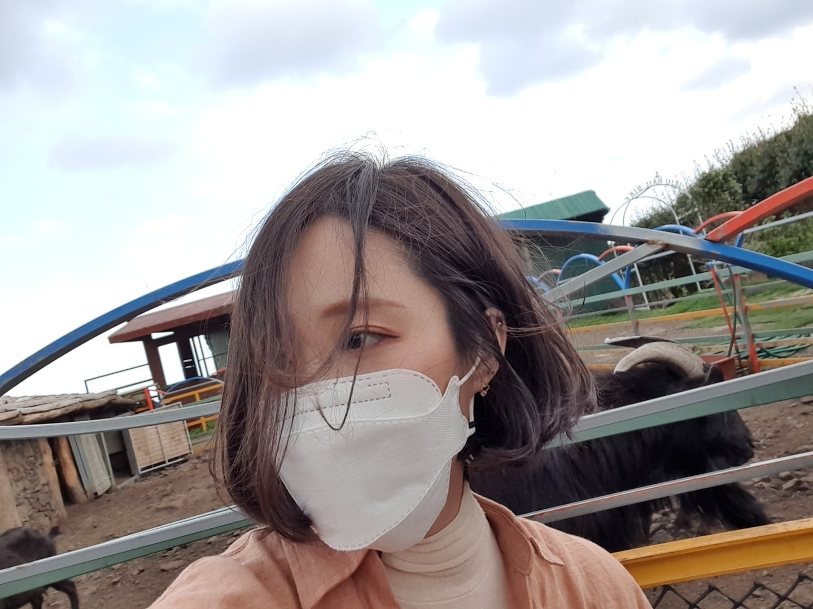

- HTML
- CSS
- javascript
HTML이란 무엇인가?
안녕 나의 HTML
테스트를할꼬야 볼드 테스트 ㅎㅎ 굳
테스트를할꼬야 밑줄 테스트 ㅎㅎ 굳
글자 크기 테스트
글자 크기 테스트
글자 크기 테스트
글자 크기 테스트
글자 크기 테스트
글자 크기 테스트

br태그
줄바꿈 태그
안녕 나는 최송이라고해. 1991년 12월 10일 눈 오는 날 태어났어 지금은 웹사이트를 독학하고있는데
이 망할 책이 보충설명을 길게 써넣으래 줄바꿈 태그를 알려준다고하는데...그래도 예시로 알려준 영문보다는
내가 이렇게 끄적거리는게 훨씬 낫다고 생각해서 아무말대잔치를 하고있단다.ㅋ
음... 오늘은 2021년 4월13일이야 드디어 사무실에 코딩책을 가지고와서 처음으로 책을 피고 공부하고있단다
할일이많은데 너무 늦게 시작햇지. ㅠ 반성하고 얼른 끝내야지. 아! 간식으로 케이크랑 아메리카노를 먹으려고하는데
벌써부터 먹고싶어 죽겟다. ㅎ 히히 저녁 대신으로 먹어야겠지. 다이어트도 해야하고 운전면허도 따야하는데
올해 정말 해야할게 아주 많다. 이 책은 일주일안으로 끝내고 포토샵 독학도 해야겠지?
음 이제 많이 썻나? 이정로도하고 태그사용하러가야지 그럼 뿅
P태그
단락 태그
안녕 나는 최송이라고해. 1991년 12월 10일 눈 오는 날 태어났어 지금은 웹사이트를 독학하고있는데
이 망할 책이 보충설명을 길게 써넣으래 줄바꿈 태그를 알려준다고하는데...그래도 예시로 알려준 영문보다는
내가 이렇게 끄적거리는게 훨씬 낫다고 생각해서 아무말대잔치를 하고있단다.ㅋ
음... 오늘은 2021년 4월13일이야 드디어 사무실에 코딩책을 가지고와서 처음으로 책을 피고 공부하고있단다
할일이많은데 너무 늦게 시작햇지. ㅠ 반성하고 얼른 끝내야지.
아! 간식으로 케이크랑 아메리카노를 먹으려고하는데
벌써부터 먹고싶어 죽겟다. ㅎ 히히 저녁 대신으로 먹어야겠지. 다이어트도 해야하고 운전면허도 따야하는데
올해 정말 해야할게 아주 많다. 이 책은 일주일안으로 끝내고 포토샵 독학도 해야겠지?
음 이제 많이 썻나? 이정로도하고 태그사용하러가야지 그럼 뿅